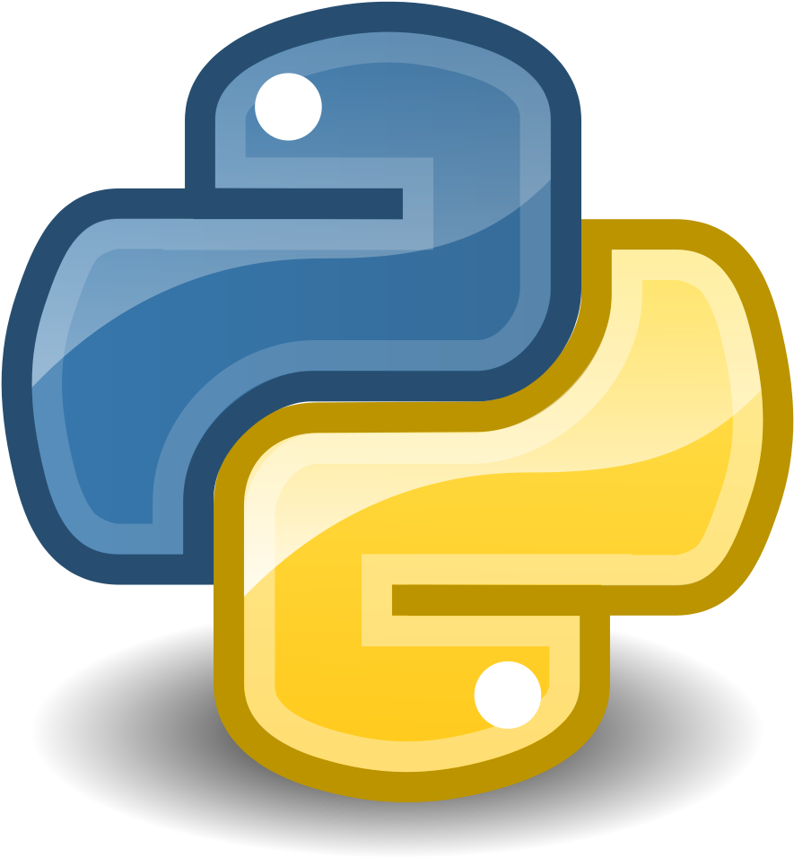
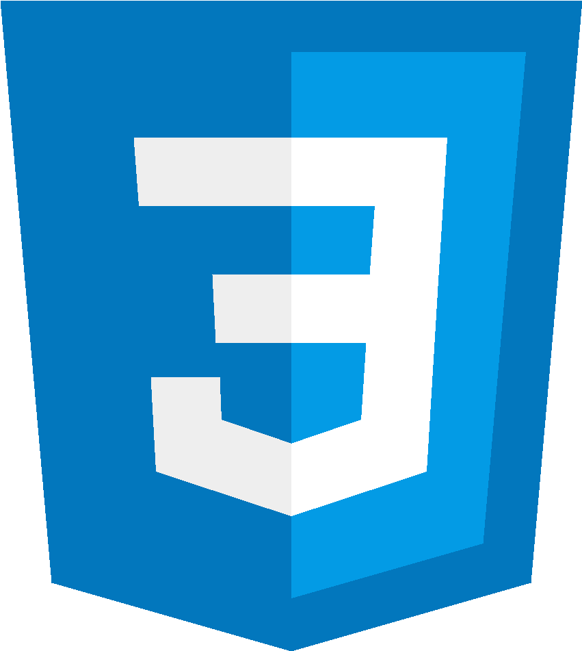

Hi, My name is Asad
and I am an aspiring
About Me
Muhammad Asad
I'm an eager Computer Science student at UBIT, University of Karachi currently enrolled in my first semester of my bachelor's degree, where I am actively learning and grasping the foundational concepts of the field. From programming and data structures to understanding the fundamentals of how computers operate, I'm building a strong base to support my future studies. I plan on expanding my horizon by exploring advanced topics, engaging in hands-on projects, and staying updated with the latest developments in technology to grow both academically and professionally.
Previous Experiences

Python (2024-2025)
I completed a Data Science course from NED University, where I gained practical experience in
Python using tools like pandas, NumPy, scikit-learn, Matplotlib, and Seaborn. I worked on
real-world projects, including analysis of the OWID COVID-19 dataset and the Iris dataset, both
featured in my portfolio. These projects involved data cleaning, analysis, and model building,
strengthening my ability to extract and present insights effectively.
HTML (2019-Present)
I began learning HTML during my school years, where I was introduced to the basics of web
development. Since then, I've maintained a foundational understanding through various online
resources and small self-guided projects. I used HTML and CSS to create and structure my
personal portfolio, focusing on clean, responsive layouts to effectively showcase my work.

CSS (2025-Present)
I have a basic understanding of CSS, which I developed alongside learning HTML during school and
through online resources. My experience includes using CSS for styling web pages, adjusting
layouts, and applying visual enhancements. I applied these skills while working on my
personal portfolio, focusing on clean design and responsive structure to present my projects
clearly.
Java (2025-Present)
I am currently studying Java at university and have covered the basics so far. My experience
includes working with variables, control structures, file handling, and implementing key logical
operations. This foundation is helping me build a solid understanding of Java's core concepts as
I continue to develop my programming skills.
RStudio (2024-2025)
I have worked with RStudio as part of my data science learning, gaining a foundational
understanding of data manipulation, visualization, and basic statistical analysis using R. I
used packages like dplyr, ggplot2, and tidyr to clean data, explore trends, and generate visual
insights. This experience helped me approach data problems analytically and present findings in
a structured and interpretable way.